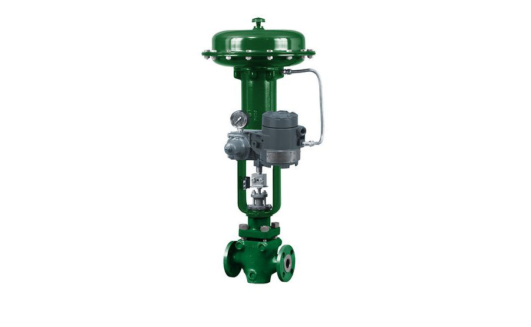
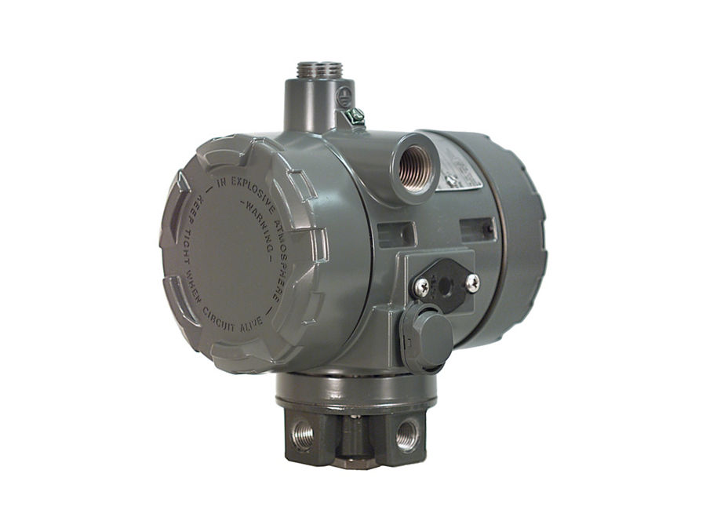
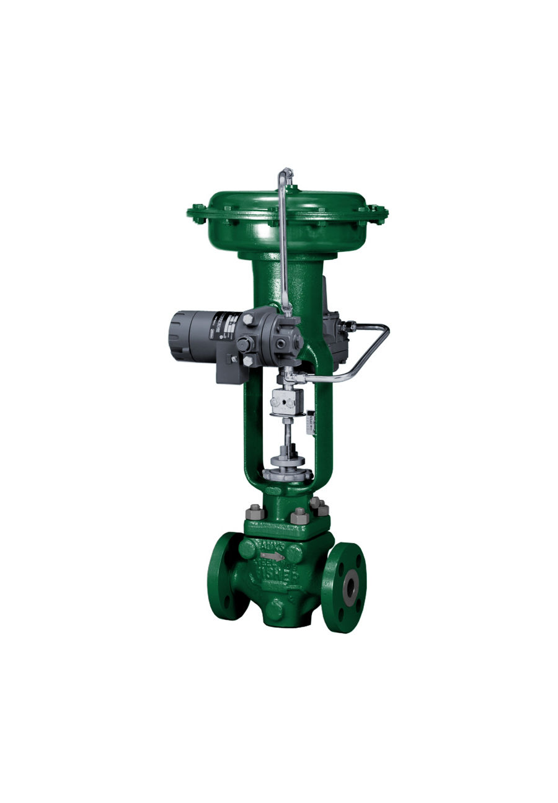

Fisher 546 Series Electro-Pneumatic Transducers
Bộ chuyển đổi I/P 4–20 mA → 0,2–1,0/0,4–2,0 bar; vỏ phòng nổ; bản 546NS cho điện hạt nhân.
Bộ chuyển đổi dòng điện sang áp suất (I/P) Fisher i2P-100, 546, 646, 846 – chuyển tín hiệu 4–20 mA thành tín hiệu khí nén cho van và thiết bị.
Fast Group cung cấp bộ chuyển đổi I/P Fisher chính hãng, đủ CO/CQ. Mỗi model có trang riêng với mô tả, biến thể, tài liệu kỹ thuật và hướng dẫn gửi RFQ.
Bộ chuyển đổi I/P 4–20 mA → 0,2–1,0/0,4–2,0 bar; vỏ phòng nổ; bản 546NS cho điện hạt nhân.

Bộ I/P hồi tiếp điện tử, 4–20 mA → 0,2–1,0 bar (đa dải); chịu rung, khí bẩn; -40 đến 85 °C.

Bộ I/P nhỏ gọn, tiêu thụ khí thấp (< 6 scfh), dùng được khí thiên nhiên; ra 0,14–2,3 bar.

Bộ chuyển đổi I/P Fisher 646. The Fisher 646 electro-pneumatic transducer uses a converter module that converts a 4 to the 20-milliampere…
Trụ sở TP. Hồ Chí Minh và văn phòng Vũng Tàu đều tiếp nhận RFQ, tư vấn cấu hình và bàn giao bộ chứng từ CO/CQ; bảo hành chính hãng 12 tháng kể từ ngày giao hàng. Yêu cầu gửi trong giờ làm việc được phản hồi trong cùng ngày; giao hàng toàn quốc.
150/41 Nguyễn Cư Trinh, P. Cầu Ông Lãnh
51 Lê Văn Lộc, P. Vũng Tàu